我很早就注意到这款中国盖革计数器了，所以我买了，总结一下使用感受。
请注意，我买的这款是Huahe版非SBM-20版
这篇文章在我的Bilibili也有同步
参考：Bilibili-空霸 KB6011 评测 能量补偿了，但没完全补偿。
空霸 KB6011 是使用盖革米勒管的辐射测量仪（盖革计数器）。
功能包括：
可以记录此次开机的剂量率平均值，累计存储剂量。
供电电池为3.7V 1200mAh锂电池。
可以显示时间内剂量的直方图。
可以打开/关闭声音、背光。
您收到的物品类似于下图。
这是我买到的 KB6011 包装及其内容。
你在 KB6011 右方看到的是与 电源 的连接线（USB-A/Micro USB）。
包含了内置1200mAh锂电池。
| 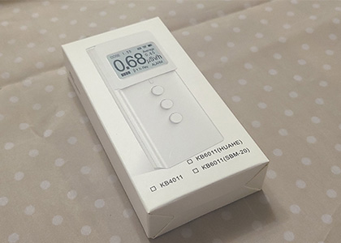 | 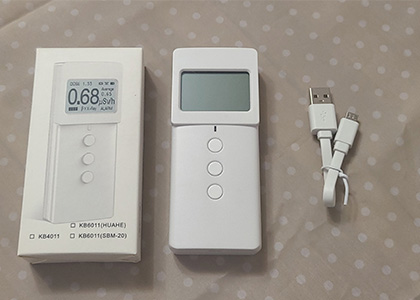 |
主体看起来是这样。
| 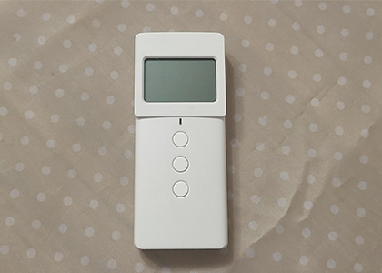 | 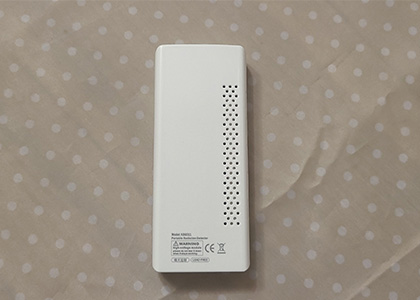 |
它大约比 DISC 小一个点。
虽然小巧，但是意外的方便握持。
| 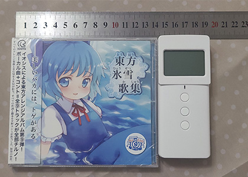 | 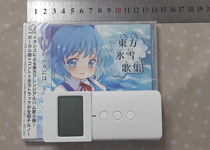 |
将它与GC-01和线路钳放在一起。
宽度和GC-01差不多。
| 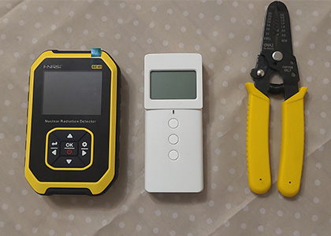 | 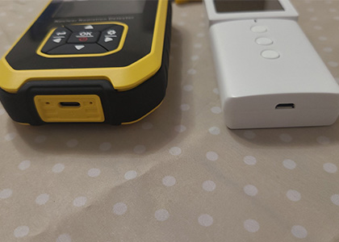 |
KB6011采用了 Huahe M4011 传感器并配备了“硬件能量补偿” 制造商宣称测量误差 +/- 10%；
似乎是铝箔？高能量的β仍可以通过它。
| 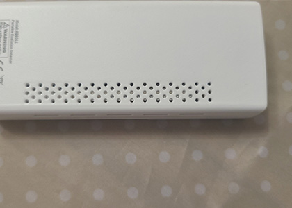 | 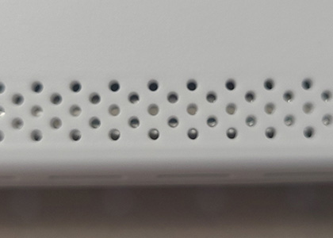 |
如下图所示，盖革管被一层铝箔包裹。
| 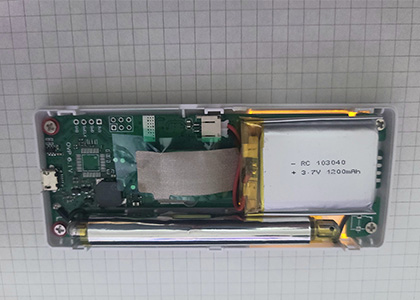 |
KB6011 的功能并没有很多，大多数为简单的功能
在主界面，剂量率显示在中心偏左的位置，字体也是最大的
底部中心显示了此机型可以测量的射线种类
中心偏右上显示了剂量率平均值
顶部为状态栏
超过 0.5 µSv/h 后，屏幕的背光灯开始闪烁，右下角出现“ALARM”字样，而不是“NORMAL”字样。
即使我们关闭超过特定剂量率阈值的报警，此功能也有效。可以看到厂商对用户的态度：即使你关闭了阈值信号，闪屏仍然会提醒你已经超过了0.5µSv/h的剂量率。
如果我们超过 99.99 µSv/h，那么结果将显示在黑色背景上。这样一个额外的强调，我们测量了三位数的值，一种“特别警告”的感觉
|
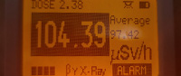 |
| 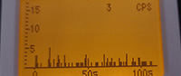 |
| 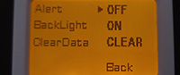 |
数值变化
由于灵敏度低至80cpm/μSv/h，因此在低剂量使用时数值波动较大。
下图显示了大约 1 小时内每分钟读取剂量率时的波动程度。

在低剂量下测量时，最好多次读取数值并取平均值，或使用定时器测量约 5 至 15 分钟的计数，然后计算平均剂量率。
另外由于 KB6011 的能量补偿只是铝箔，所以并不能准确的测量空气剂量率，我们推荐用于测量空气剂量时离地1m以上并且计算单位时间内的平均值
KB6011 只能显示μSv/h一种单位，所以它无法测量β射线的正确值
我分别测量了低能光子源与U-238链源
由于 KB6011 说明里没有写，所以不清楚它的方向特性。
但是有一点需要注意，它的盖革管在机身的左侧，使用时请注意。
它可以发出辐射的粒子检测音和报警，但它们是同时存在的，请注意
我分别测量了Am-241光子源和U-238链源
Am-241光子源
KB6011:Avg:0.93 μSv/h Max:1.22 μSv/h
参考值：0.26 μSv/h
U-238链源
KB6011:Avg: 6.26 μSv/h Max:7.44 μSv/h Low：5.07 μSv/h
参考值：1.85 μSv/h
它是中国1000元以下少数提供了能量补偿的型号之一。但是补偿不尽人意，仅仅是用了铝箔包裹住了盖革管。
不过它的算法很有意思，计数大范围波动时会直接重新计算而不是慢慢的增加或减少，如果重视这一点的话，我想这个型号会是你的选择。
此外，测量仪的主体很简单，操作也不复杂，因此我认为它很容易使用。
缺点就是并没有有效补偿的“能量补偿”β射线仍然会被盖革管检测到，我们推荐用于测量空气剂量时离地1m以上并且计算单位时间内的平均值
它也没有其他单位供您选择，仅能显示μSv一种单位，我认为这是唯一令人失望的一点。